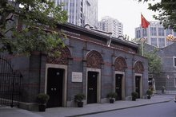
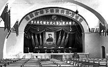
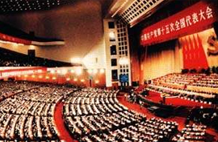
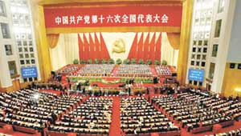
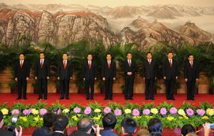
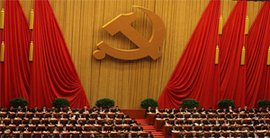
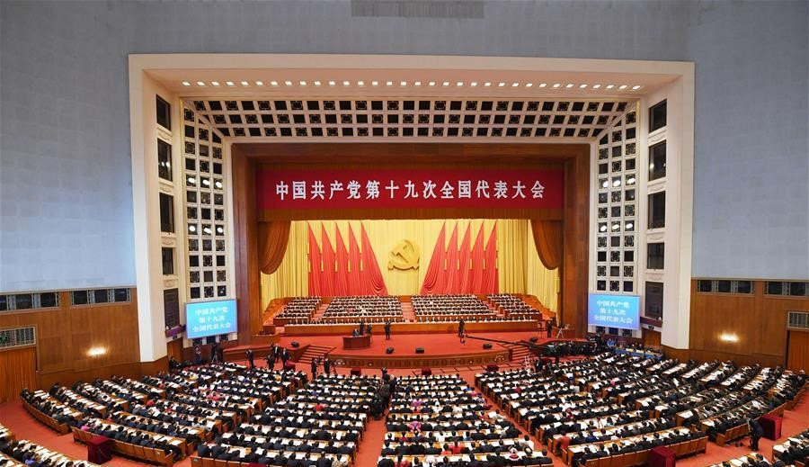

党的指导思想又称党的行动指南， 是指导我们党全部活动的理论体系， 是党的思想建设、政治建设、组织建设、 作风建设、文化建设、制度建设和反腐倡廉建设的理论基础。
中文名称:党的指导思想
外文名称:Party's guiding ideology
性质:指导思想
国家:中国
十九大党章载明:中国共产党以马克思列宁主义、毛泽东思想、邓小平理论、 "三个代表"重要思想、科学发展观、习近平新时代中国特色社会主义思想作为自己的行动指南, 这是新时期党的指导思想。
历史证明，毛泽东思想是马克思列宁主义普遍原理同中国革 命具体实践的结合。它指引中国人民取得了新民主主义革命的胜利。随后， 又实现社会主义改造和初步建设社会主义的胜利。邓小平理论是毛泽东思想的继承和发展， 是马克思主义在中国发展的新阶段，又是当代中国的马克思主义。改革开放四十年的经验证明， 只有这个理论才能真正解决社会主义的前途和命运问题,才能保证中国亿万人民完全实现民族振兴。 实践证明，中国革命和建设的一切胜利，都是在马克思列宁主义、毛泽东思想、 邓小平理论指引下取得的，都是马克思列宁主义、毛泽东思想、邓小平理论的伟大胜利 。因此，无论是过去、现在和将来，我们党都必须坚定不移地以马克思列宁主义、 毛泽东思想、邓小平理论、"三个代表"重要思想和科学发展观作为自己的行动指南。
十八届四中全会指出:全面推进依法治国， 必须贯彻落实党的十八大和十八届三中全会精神， 高举中国特色社会主义伟大旗帜，以马克思列宁主义、 毛泽东思想、邓小平理论、"三个代表"重要思想、科学发展观为指导， 深入贯彻习近平总书记系列重要讲话精神。
中共十九大通过了关于《中国共产党章程(修正案)》的决议，将习近平新时代中国特色社会主义思想写入党章。
中国共产党从其诞生之日起就始终以先进的科学理论作为自己的指导思想:
| 
1921年中共一大，将"马克思列宁主义"作为党的指导思想
|
| 
1945年中共七大将"毛泽东思想"确立为党的指导思想并写进党章
|
| 
1997年中共十五大将"邓小平理论"确立为党的指导思想并写进党章
|
| 
2002年中共十六大将"三个代表"重要思想确立为党的指导思想并写进党章
|
| 
2007年中共十七大将"科学发展观"写进党章
|
|

2012年中共十八大将"科学发展观"确立为党的指导思想
|
| 
2017年10月中共十九大将"习近平新时代中国特色社会主义思想"确立为党的指导思想并写入党章
|